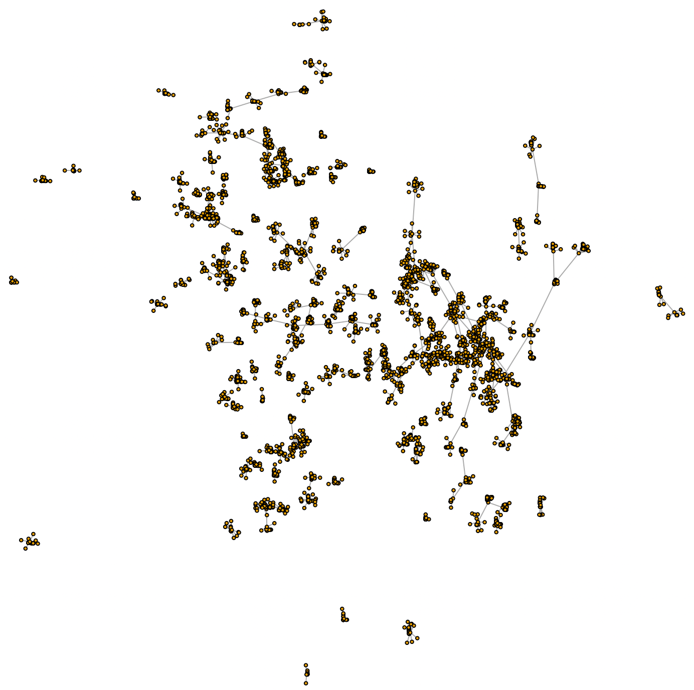

Intro
Network Graphs are NICE and USEFUL (or at least, that’s my opinion). I have used them many a time, and they really usually help me get an understanding that I wouldn’t get by just looking at rows and rows of a table…
To visualize such “networks”, I usually prefer the package visNetwork. It’s nice, has some cool interactive options, and as I’m used to it, it’s “easier” for me to use it… And with some practice and a bit of studying different available layouts, you can get nice looking results…
But there is a hitch: For “large” graphs (and not that large, mind you), it slows down a bit too much. So this here is me looking into alternatives.
visNetwork Options
I’m not going to go into details, but let’s just say: If you want a visNetwork to show faster in R and you haven’t looked into it before, your best go-to option is:
visNetwork(nodes, edges) %>%
visPhysics(stabilization = FALSE)That last bit will make it MUCH faster. It’s a cool thing to use in a Shiny dashboard, for instance. I definitely recommend you look into this package if you work with say “a few hundred vertices”.
But if you get into too many (say > 3000 or > 5000 or so, depending on your hardware of course…) vertices, you might get frustrated looking at how the “physics” do their magic and get you to a nicely distributed thing…
In a test I just ran with a dummy graph with roughly 5100 “nodes” and 5000 edges, it takes roughly 3 minutes to go from here:

to here:

I.e. the structure appears after waiting a while. On the plus side, with visNetwork, you can click, highlight neighbours, drag a node (and thereby its neighbours and neighbours-neighbours… to any degree :)), it’s quite interactive, intuitive, and with sufficiently small networks, it’s actually a good thing to show interactively. (Then, again, a mix of that with Shiny will do absolute magic).
Yes, you CAN absolutely use visNetwork with NO “animation”, BUT for some reason, I’ve tried MANY different layouts, and not once I was able to make it nice (even when using igraph layouts…) for my use cases WHILE getting directly to the static results.
(And admittedly… Maybe I need to keep trying :S)
Obvious trick
So in SOME cases, you can… Simply NOT load the whole network. For my typical use cases (inventories of stuff with different connected data points, say machines to installed SW, OS or IP Network ranges, could be…), you might simply decide that you can focus on a small part of the network, adding a “search box” for your Shiny Dashboard, so that your user can look for all things connected to one specific machine or all machines that use a specific software maybe…
But in other cases, you might want to see it all, maybe to get a better sense of the overall structure of things, or getting a sense quickly of what clusters you have (connected subgraphs) and maybe which ones have more vertices, bigger diameter or radius… You name it.
Then there is not much of a choice: We need to have something fast enough.
Other packages
So there are a few R packages out there. The package “network” might seem obvious (and it works nicely, by the way, from my few tests…). Defaults are rather OK, and it’s a lot faster (no animation, no interactivity though) to load the result than with visNetwork:

Given the tradeoffs… I personally still prefer (by far) visNetwork here.
But as far as rendering the final graph in its final distribution form, so far I think the best/fastest alternative I found was the igraph package, and specifically using the “fruchtermanreingold” layout.

Now I know, I know, it looks a bit messier…
But the point here was SPEED of rendering, and comparatively, for the same “network”, iGraph was fastest, by a lot.
(And no, sorry: I didn’t actually benchmark these renderings… But you can trust me on that one, it’s noticeable).
But visNetwork was cooler… Why change?
So here is the trick. Whatever I do, although the “animation” of visNetwork is way cooler than a static output and all, if it’s too slow to load while showing a dashboard to a colleague/boss/client, it’s… Too slow for me :S
Then speed gains value over “coolness”.
But then again… Most of the times, I’m using those Graphs in Shiny Dashboards. So I decided to “look for speed output first”, and that I will look into options for making things more interactive using Shiny later.
And that’s what I did.
The code for today
library(igraph)
ex1 <- data.frame(from = paste0("a", 1:5000), to = paste0(sample(c("a", "b"), 5000, replace = TRUE), sample(1:100, 5000, replace = TRUE)))
g <- graph_from_data_frame(ex1, directed = FALSE)
lo <- layout_with_fr(g, niter = 1000) # faster, "fruchtermanreingold", and also so far best distribution...
## Different algorithms give different results of course
#lo <- layout_with_kk(g) # intermediate, and not nice
#lo <- layout_with_gem(g) # too slow
#lo <- layout_with_dh(g) # too slow
#lo <- layout_with_lgl(g) # acceptably fast, but messy
#lo <- layout_with_sugiyama(g) # Not working?
# Testing layout based on ATLAS2 algo:
# Found here nice initial code: https://github.com/analyxcompany/ForceAtlas2/blob/master/R/layout.R
# Nice, sure, but not fast enough... Skipping.
# lo <- layout.forceatlas2(g, directed = FALSE,
# iterations = 600,
# k = 1000,
# gravity = 10,
# ks = 5,
# delta = 1.5,
# plotstep=0)
lo <- norm_coords(lo, ymin=-1, ymax=1, xmin=-1, xmax=1)
plot(g,
edge.arrow.width = .25,
edge.arrow.size = .25,
vertex.label = NA,
vertex.size = 1,
rescale=FALSE,
layout=lo*1)
# Now testing the "network" package instead...
library(network)
g2 <- network(ex1)
# here layout defaults to fruchtermanreingold, too.
# Good BUT much slower than iGraph with a "large" dataset...
plot.network(g2,
vertex.cex = 0.5,
usearrows = FALSE,
displayisolates = TRUE,
displaylabels = FALSE)
# And finally visNetwork
library(visNetwork)
unique_nodes_vector <- unique(c(ex1$from, ex1$to))
nodes <- data.frame(id = unique_nodes_vector, labels = unique_nodes_vector)
edges <- ex1
visNetwork(nodes, edges) %>% visPhysics(stabilization = FALSE)EDITO: AFTER THE FACTS
After testing/learning more about igraph layouts, I went back to visNetwork, and sure enough:
visNetwork(nodes, edges) %>%
visIgraphLayout(layout = "layout_with_fr", niter = 1000)That works! Fast as with igraph, static, yes, but I can now leverage this on MANY past network graphs!
So some of the present blog entry was… Not as useful, actually I could have skipped testing other packages altogether (but then I wouldn’t have tested more igraph and its layouts…), and the conclusion should be updated (but that would be cheating, so I’ll leave it as is).
visNetwork: My preferred option. Because slightly cooler.
Conclusions
Here I was testing different packages for rendering “large” (well, not really…) Network Graphs.
I still like visNetwork the best, and I owe it to this package to keep testing and looking for the right combination of options that will get me the result I want, fast.
But for now, the fastest alternative that was fitting my needs was the igraph package.
References
The best reference I found out there so far for the visNetwork package